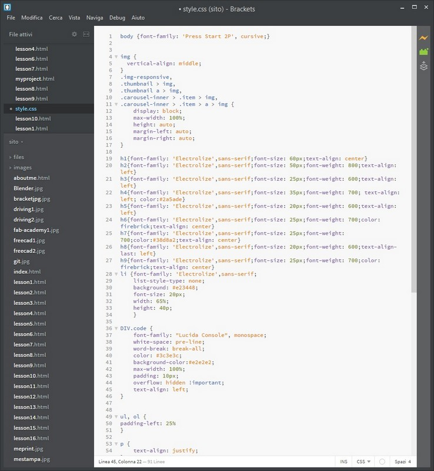

Project management
For this week we have to improve our project management skills; the goals are:
- make a website for housing all the information about the FabAcademy course and for show our progressions in the final project;
- use Git hub for version management and for learn how to work with other people at the same time on a project.
Git Hub
Git hub is an on-line service for make a repository and document all the revision of the file we put and pull.
The access at the repository is made by text terminal, and some of the commands are shown below we have a local repository on the OpenDot git hub account. All the student of this location have to respect the others directory.
 Git bash text interface; don't pay attention at the name of the pc, I'm using my mom notebook this week
Git bash text interface; don't pay attention at the name of the pc, I'm using my mom notebook this week
The concept is that we have a shared repository where we work together to make the OpenDot site made of our pages and we have to maintain updated our site respecting the other user sites.
HERE you can find the basic command of the terminal
It’s a good thing run the following order of commands when you modify something and want to update the repository:
- make the current directory, the one you want to have the clone of the repository, wiht "cd name of the folder";
- git clone (only the first time);
- git pull;
- git add (all the file you want by name or "." to add all file: new and modified);
- git commit -m "message of the commit";
- git push.
HTML and CSS for web design
For create the site I searched online a basic template, I copied some of the structure and the personalized structure.
For this purpose I used a program called bracket, it is a free text editor tool optimized for web develop.
It support hTML5 and CSS structure and have shortcut for writing web syntax.
it also have a real time visualization of how the code looks like in web browser (it works on chrome).
I used some bootstrap content and some goggle font for make the site looks better.
I also experiment the implementation of a JavaScript for map visualization with my home locator.
Every time I have to add a new lesson I copy the page of the lesson before and modify that by adding all the content and making link between pages in the index and in all pages.
Bracked interface screenshot
The design of my site is basic and simple. I want to have a clean presentation, so I use 3 different fonts from google font incorporated in the css page.
One is the "press start 2p" an 8-bit like font who remember the arcade and Nintendo games, but I use this only for the link and the download (and maybe for some particular occasions) because is nice but isn't pleasant to read, so it will hurt the reader's eyes if used to write long text.
The other is a sans-serif "electrolize" that is a machine like font.
The sans-serif font is made for the electronic pages, so it easy to read on a monitor and it will not get the reader tired.
I also incorporate a "Lucida Console" font that is a terminal like font for make the code part more real.

I make also a dynamic resize of the img that take the border of the browser and set at the centre the img.If the window is resized the img is also resized in real time.
Final project
We have also to think about our final project of the FabAcademy course:we have to make a little description and a page about that.